p-Median Problem
p-Median Problem
給定許多個地點，設立p個聯絡站，使得每一個地點皆可被其中一間聯絡站聯絡到。令聯絡距離的總和最小。
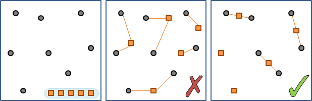此處討論一維版本，地點和連絡站落於數線上。
簡化問題、觀察問題：只有一個連絡站
將聯絡站放在中位數是最好的。如果中位數是在兩個位置中間的話，則聯絡站可以游移於兩個位置之間、其上，都不會改變聯絡距離的總和。所有的聯絡站都可以挪至地點之上！
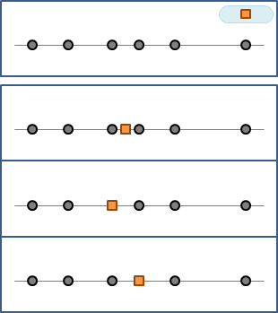證明不難。試著移動聯絡站，讓各個地點的聯絡距離此消彼長，觀察一下就會明白了。動手試試看吧！
另外也得到一個重要的結論：所有的聯絡站都可以挪至地點之上，而不會改變聯絡距離的總和。
簡化問題、觀察問題：只有一個地點
將全部的聯絡站放在該地點上是最好的。
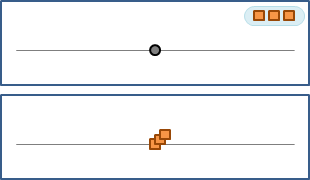聯絡站全部疊在一起，有摩肩接踵、水洩不通的感覺，理當好好分配才對。說到分配，如果聯絡站數量大於等於地點數量，只要將聯絡站安排在各個地點上，聯絡距離的總和就是零了。
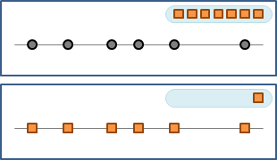簡化問題、觀察問題：地緣
為了拉近聯絡距離，所有地點都會連向最近的聯絡站，而不會有捨近求遠的情形。換個角度來看，一個聯絡站只會連向鄰近的地點，而不會有捨近求遠的情形。
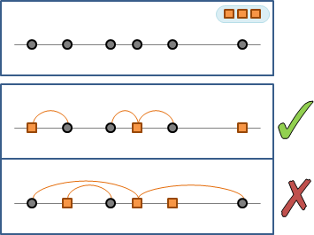p-Median Problem可以重新想成：依照地緣，所有地點分配成p個區域，每一區自行設立一個聯絡站，位於中位數，可挪至鄰近地點。
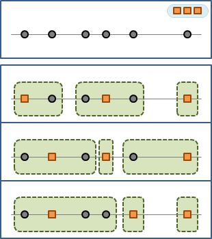至此，p-Median Problem就成了如何分區的問題。
簡化問題、觀察問題：分區
如果有地點選擇聯絡站時捨近求遠，表示這種分區方式不好。
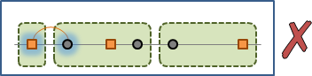各個區域之間相鄰越遠越好？大家自行觀察看看吧。
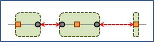動態規劃
聯絡距離的總和，可以以區為單位，分別計算，最後再統計——這就是在分割問題。
拿掉最邊邊的一區、拿掉該區的聯絡站，如此便縮小了問題範疇，讓小問題與原問題類似。接著窮舉該區的各種大小，求得遞迴式。
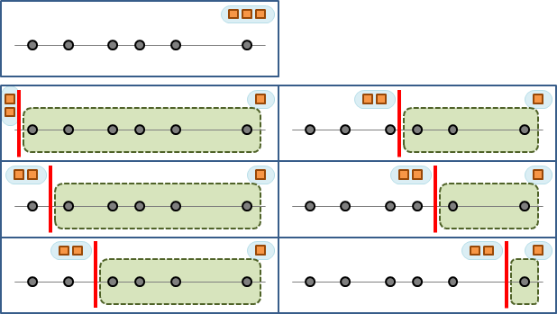注意別讓剩下來的地點太少、剩下的聯絡站太多，而導致連絡站重疊。妥善分配重疊的聯絡站，一定能使聯絡距離的總和更小。沒有必要枚舉出讓聯絡站重疊的分區方式。
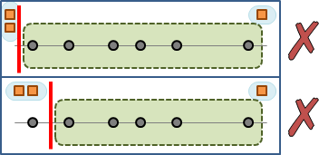
f(p, n) =
{ min( f(p-1, p-1) + d(p , n) ,
{ f(p-1, p ) + d(p+1, n) ,
{ ... ,
{ f(p-1, n-2) + d(n-1, n) ,
{ f(p-1, n-1) + d(n , n) ) if p < n && n >= 0
{
{ 0 if p >= n && n >= 0
{ +inf otherwise
p：已設立了p個聯絡站。
n：已涵蓋了第1個到第n個地點。
f(p, n)：設立p個聯絡站，涵蓋第1個到第n個地點時，其聯絡距離的總和。
d(i, j)：第i個地點到第j個地點所構成的區域，其聯絡距離的總和最小值。
可利用中位數算得。
N為地點個數，P為聯絡站個數。總共O(NP)個子問題，計算一個子問題需時O(N)，時間複雜度為O(N^2 * P)。
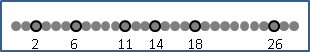動態規劃：Monotonicity
不難發現，分界線位於最適中、最均衡的位置，讓聯絡距離的總和最小。

觀察地點逐步增加的問題們。最佳分界線漸漸右移。
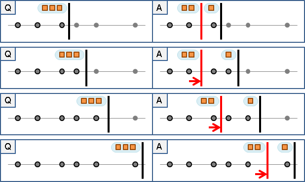觀察聯絡站逐步增加的問題們。最佳分界線漸漸右移。
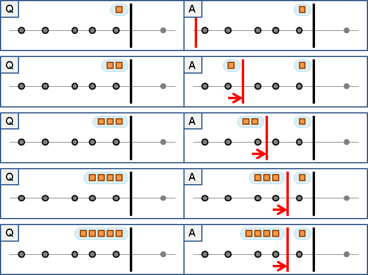因此我們不必窮舉所有的區域大小！但是時間複雜度仍然是O(N^2 * P)。
UVa 662
動態規劃：Convex Hull
採用凸包優化，斜率皆是1，可視作deque優化，時間複雜度是O(NP)。